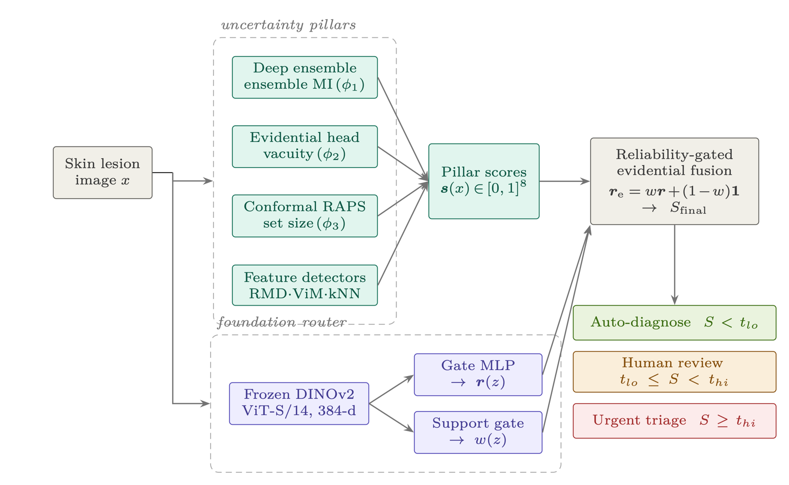

RGEF: Reliability-Gated Evidential Fusion for Robust Medical AI
IEEE International Conference on Robotics, Automation, Artificial-Intelligence and Internet-of-Things (RAAICON) 2026

Abstract
Deep skin-lesion classifiers rival dermatologists on curated benchmarks, yet they fail silently once deployed, where many inputs fall outside the training distribution. No single notion of uncertainty explains this failure: ensembles stay jointly overconfident under covariate shift, evidential deep learning degrades once features shift, and conformal prediction certifies only marginal coverage. We address this gap with Reliability-Gated Evidential Fusion (RGEF), which integrates these paradigms through a learned, input-conditional gate that allocates trust on a per-sample basis. Rather than conditioning the gate on the task backbone, whose representation collapses under shift, we condition it on frozen self-supervised DINOv2 embeddings, which are weak detectors in isolation but domain-invariant routers. When an input drifts outside the gate's calibrated support, a density-based fallback smoothly reverts fusion to its static mode. Benchmarked against eleven published post-hoc detectors on an internal near-OOD split (HAM10000, with df/vasc held out), RGEF attains an AUROC of 0.9594 (10-seed mean 0.9596, 95% CI [0.9585, 0.9608]) versus 0.7805 for MSP, 0.8179 for the best single pillar and 0.8239 for a scalar meta-learner, each significant at p < 10⁻⁴, and cuts FPR@95 from 52.6% to 23.2%. The advantage persists under external shift: on ISIC 2019 (unseen SCC) AUROC rises from 0.6705 to 0.8144, and on PAD-UFES-20 (smartphone acquisition) from 0.5567 to 0.6148 — above the static and supervised-gate variants, though not above the strongest scalar baselines, a residual modality gap we analyse rather than conceal. A per-class error audit and a three-tier triage protocol connect the score to clinical use. Reliability-aware fusion, rather than any individual estimator, is the key ingredient for safe dermatology AI.
Cite
@inproceedings{rayhan2026rgef,
title = {RGEF: Reliability-Gated Evidential Fusion for Robust Medical AI},
author = {Rayhan, Md Abu Sayeb and Fahimah, Mosammat and Mahmud, Md Tarek and Hiya, Hustagna and Dhar, Ajoy Shutra},
booktitle = {IEEE International Conference on Robotics, Automation, Artificial-Intelligence and Internet-of-Things (RAAICON) 2026},
year = {2026}
}